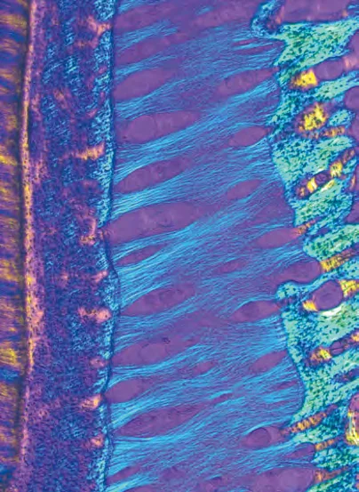

نسخه استخراجشده؛ ترجمه یا تأیید علمی انجام نشده است. وضعیت: captured
لیگامان پریودنتال (PDL) بافت همبندی است که ریشهی دندان را به استخوان آلوئول متصل میکند و در فضای بین سمان و لامینا دورا قرار دارد.
پهنای متوسط: حدود ۰٫۲ تا ۰٫۲۵ میلیمتر (محدودهی ۰٫۱۵ تا ۰٫۳۸ میلیمتر).
شکل ساعت شنی: باریکترین نقطه در یکسوم میانی ریشه است؛ همانجا که نقطهی تکیهگاه یا فولکروم حرکت دندان قرار دارد.
فیزیکی و حمایتی: اتصال دندان به استخوان و جذب و توزیع نیروهای جویدن.
سازنده و بازسازیکننده: ساخت و نوسازی سمان، استخوان و خود لیگامان.
تغذیهای: رساندن مواد غذایی به سمان و استخوان از طریق شبکهی عروقی غنی.
حسی: انتقال حس لامسه، فشار، درد و حس عمقی.
📌 نکته: پهنای PDL با افزایش سن و کاهش عملکرد کم و در دندانهای تحت نیروی زیاد زیاد میشود.
فیبرهای اصلی PDL دستههای کلاژن نوع I هستند که بر اساس محل و جهت به گروههای زیر تقسیم میشوند:

کرست آلوئولار (Alveolar Crest): از سمان درست زیر اپیتلیوم اتصالی بهصورت مایل به سمت پایین و کرست استخوان میروند. مانع بیرونزدگی (Extrusion) دندان میشوند و در برابر نیروهای جانبی مقاومت میکنند.
افقی (Horizontal): عمود بر محور طولی دندان کشیده میشوند و در برابر نیروهای جانبی مقاومت میکنند.
مایل (Oblique):پرشمارترین گروه (حدود ۸۰ درصد فیبرها). از سمان بهصورت مایل و رو به کرونال به استخوان میروند و نیروهای عمودی جویدن را تحمل میکنند.
اپیکال (Apical): از ناحیهی اپکس بهصورت شعاعی پخش میشوند. در برابر لوکساسیون و تیپینگ مقاومت کرده و از بستهی عروقی-عصبی محافظت میکنند.
بینریشهای (Interradicular): فقط در ناحیهی فورکیشن دندانهای چندریشهای وجود دارند.
⚠️ نکته: فیبرهای اپیکال و بینریشهای در دندانهایی که تشکیل ریشهشان کامل نشده هنوز وجود ندارند.
هر دستهی فیبر اصلی در دو انتها داخل بافت سخت مدفون میشود؛ به این انتهای مدفونشده فیبرهای شارپی (Sharpey's Fibers) میگویند.
در سمت سمان: فیبرها پرشمارتر و نازکتراند.
در سمت استخوان: فیبرها کمشمارتر اما ضخیمتراند.
⚠️ اشتباه رایج ۱: فیبرهای مایل پرشمارترین گروه PDL هستند، اما پرشمارترین گروه فیبرهای لثهای دنتوژنژیوال است. این دو را با هم اشتباه نگیر.
⚠️ اشتباه رایج ۲: باریکترین نقطهی PDL در یکسوم میانی ریشه است، نه در اپکس و نه در کرست.
⚠️ اشتباه رایج ۳: افزایش پهنای فضای PDL در رادیوگرافی یکی از نشانههای کلاسیک ترومای اکلوزال است.
⚠️ اشتباه رایج ۴: فیبرهای PDL زیر کرست استخوان قرار دارند؛ هر فیبری که بالای کرست باشد فیبر لثهای است.
⚠️ اشتباه رایج ۵: نقطهی مقابل ترومای اکلوزال، آنکیلوز است: فضای PDL محو میشود، دندان هیچ لقی ندارد و صدای دق آن فلزی است.